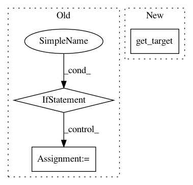

87884d4666a76d3f6b35ff61719e5e5c80ea6037,polyaxon/api/plugins/views.py,StopTensorboardView,post,#StopTensorboardView#Any#,121
Before Change
experiment = get_object_or_404(Experiment, project=project, id=experiment_id)
has_tensorboard = experiment.has_tensorboard
tensorboard = experiment.tensorboard
elif group_id:
group = get_object_or_404(ExperimentGroup, project=project, id=group_id)
has_tensorboard = group.has_tensorboard
tensorboard = group.tensorboard
else:
has_tensorboard = project.has_tensorboard
tensorboard = project.tensorboard
if has_tensorboard:
celery_app.send_task(
SchedulerCeleryTasks.TENSORBOARDS_STOP,
After Change
countdown=conf.get("GLOBAL_COUNTDOWN"))
auditor.record(event_type=TENSORBOARD_STOPPED_TRIGGERED,
instance=tensorboard,
target=get_target(experiment=experiment_id, group=group_id),
actor_id=self.request.user.id,
actor_name=self.request.user.username)
return Response(status=status.HTTP_200_OK)
In pattern: SUPERPATTERN
Frequency: 3
Non-data size: 3
Instances
Project Name: polyaxon/polyaxon
Commit Name: 87884d4666a76d3f6b35ff61719e5e5c80ea6037
Time: 2019-03-17
Author: mouradmourafiq@gmail.com
File Name: polyaxon/api/plugins/views.py
Class Name: StopTensorboardView
Method Name: post
Project Name: polyaxon/polyaxon
Commit Name: 87884d4666a76d3f6b35ff61719e5e5c80ea6037
Time: 2019-03-17
Author: mouradmourafiq@gmail.com
File Name: polyaxon/api/plugins/views.py
Class Name: TensorboardView
Method Name: audit
Project Name: pantsbuild/pants
Commit Name: 775600e948c88f6ab2f6d5b4c57b83c55da8fb61
Time: 2015-09-14
Author: john.sirois@gmail.com
File Name: src/python/pants/backend/python/targets/python_target.py
Class Name: PythonTarget
Method Name: resources